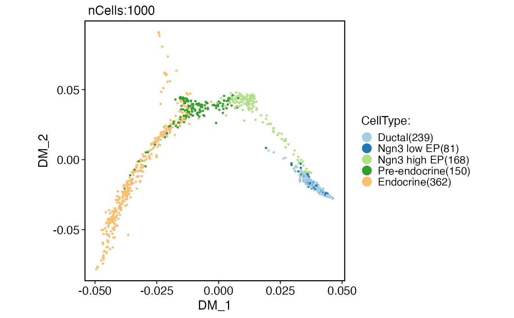

Run DM (diffusion map)
RunDM(object, ...)
# S3 method for Seurat
RunDM(
object,
reduction = "pca",
dims = 1:30,
features = NULL,
assay = NULL,
slot = "data",
ndcs = 2,
sigma = "local",
k = 30,
dist.method = "euclidean",
reduction.name = "dm",
reduction.key = "DM_",
verbose = TRUE,
seed.use = 11,
...
)
# S3 method for default
RunDM(
object,
assay = NULL,
slot = "data",
ndcs = 2,
sigma = "local",
k = 30,
dist.method = "euclidean",
reduction.key = "DM_",
verbose = TRUE,
seed.use = 11,
...
)An object. This can be a Seurat object or a matrix-like object.
Additional arguments to be passed to the DiffusionMap function.
A character string specifying the reduction to be used.
An integer vector specifying the dimensions to be used. Default is 1:30.
A character vector specifying the features to be used. Default is NULL.
A character string specifying the assay to be used. Default is NULL.
A character string specifying the slot name to be used. Default is "data".
An integer specifying the number of diffusion components (dimensions) to be computed. Default is 2.
A character string specifying the diffusion scale parameter of the Gaussian kernel. Currently supported values are "local" (default) and "global".
An integer specifying the number of nearest neighbors to be used for the construction of the graph. Default is 30.
A character string specifying the distance metric to be used for the construction of the knn graph. Currently supported values are "euclidean" and "cosine". Default is "euclidean".
A character string specifying the name of the reduction to be stored in the Seurat object. Default is "dm".
A character string specifying the prefix for the column names of the basis vectors. Default is "DM_".
A logical value indicating whether to print verbose output. Default is TRUE.
An integer specifying the random seed to be used. Default is 11.
pancreas_sub <- Seurat::FindVariableFeatures(pancreas_sub)
pancreas_sub <- RunDM(object = pancreas_sub, features = Seurat::VariableFeatures(pancreas_sub))
#> Install package: "destiny" ...
#> 'getOption("repos")' replaces Bioconductor standard repositories, see 'help("repositories", package = "BiocManager")'
#> for details.
#> Replacement repositories:
#> CRAN: https://cloud.r-project.org
#> Bioconductor version 3.18 (BiocManager 1.30.23), R 4.3.2 (2023-10-31)
#> Installing package(s) 'destiny'
#> also installing the dependencies ‘xts’, ‘laeken’, ‘ranger’, ‘TTR’, ‘pcaMethods’, ‘ggplot.multistats’, ‘VIM’, ‘knn.covertree’, ‘smoother’
#>
#> The downloaded binary packages are in
#> /var/folders/rv/3jnfbs0d6r7d0c5bfj7ft5k00000gn/T//RtmpAC8Cie/downloaded_packages
#> Warning: You have 2000 genes. Consider passing e.g. n_pcs = 50 to speed up computation.
#> finding knns......done. Time: 2.61s
#> Calculating transition probabilities...
#> Warning: 'as(<dsCMatrix>, "dsTMatrix")' is deprecated.
#> Use 'as(., "TsparseMatrix")' instead.
#> See help("Deprecated") and help("Matrix-deprecated").
#> ...done. Time: 0.00s
#>
#> performing eigen decomposition......done. Time: 0.01s
CellDimPlot(pancreas_sub, group.by = "CellType", reduction = "dm")
#> Warning: No shared levels found between `names(values)` of the manual scale and the data's fill values.
